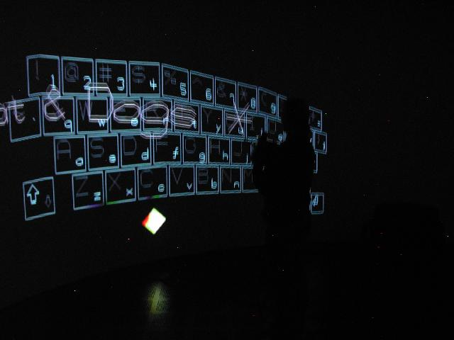
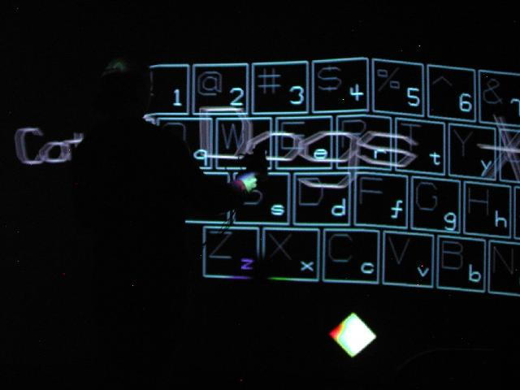

Floating
keyboard for
CAVE
Environment
Adding floating keyboard with CAVElib for alphanumeric input
Are data input methods needed in immersive spaces?
A strength of immersive environment is ability to explore data by its nature due to the gained degrees of freedom. For this reason, most of useful immersive environment applications are viewers of some sort. Users input are mostly limited to only navigation so that data input, such as keyboard input, is often not required. So far, this is been mostly true due to type of data or type of visualization that were often brought into immersive space. While it is true that a good data input method is not needed, it is probably also true that visualization that needs intensive data input is not attempted in immersive space due to a lack of good data input method.
One reason why we can not come up with a good alphanumeric input method is due to lack of our ability to connect our space to virtual space PRECISELY. Of course. It is because we can not see the depth of the space well enough unless the depth of geometry is EXACTLY on the screen. If you are interested in knowling what I mean by this, please read
"
Immersive environment is naturally incomplete
"
section of
"
Adding interface to I mmersive Environment with PDA host
"
, a parallel project to this CAVE keyboard project.
The purpose of this project is to experiment with different ways of input, and to find out fast and effective alphanumeric input methods while resulting code is organized and offered as "CAVoard", API for CAVElib keyboard input method.
a floating keyboard
Maybe it did not have to look like a keyboard, but what is tried first is of course simple copy of real keyboard. This is what we are used to seeing, we know where desired keys are. It works in the same way as a keyboard. The keyboard is placed in front of you as it is activated with current wand position. Each charactor can be struck by wand to be keyed into a string buffer. To avoid performance penalty, I have avoided to make it look fancy for the first attempt. Later version should support fancier keys on a separate thoread. The keyboard allows programmers to decide which keys are allowed. This is because certain charactors are illegal as a file name and so on. The keyboard works as non-blocking function so it will not pause the CAVE environment while user input is being keyed. It will only update state of string buffer, and programmers have freedom to fetch them at their will. Supported methods for the first version is as follows. This no way mature enough. It will be improved.
Current feature
includes:
- Full keyboard with choice of setting allowed keys
- Place keyboard in desired location with desired size and spacing of keys
- Activate/disactivate with or without current position remembered
- Initialize, edit and fetch string buffer as string or char*
You will decide when to fetch by peeping current last charactor
For example, you can retrieve the buffer as you see "return" charactor
- Display current string buffer right next to wand or right below keyboard
cavoard class public methods:
cavoard();
~cavoard();
// does not do anything since CAVE will void any operation here
void init_cavoard(float, float);
// specifies scale of keyboard and spacing between keys
// and initializing members etc
// this should be called from update call back function of your code
void set_keys(char*, char*);
// set allowed keys by overriding default full keyset
// specify them as string as "lower_case_set" and "upper_case_set"
void unset_keys();
// unset allowed keys and reset to default keyset
void draw_wand();
// will draw a sphere in extended wand position
// (z-displacement)
void draw_keyboard();
// will draw virtual keyboard with string buffer
// this should be called from display call back function of your code
int update_keyboard();
// updating display/physics of keyboard
// This is the main function of this class.
// You should always call this from your update call back function.
// Each time called, it will check on key press, and returns as int.
// It is upto you when you will retrieve buffer by get_buffer functions.
bool is_active();
// returns keyboard activation state
void activate();
// enables keyboard
// initializes keyboard coordinate to current extended wand position
void activate(float, float, float);
// enables keyboard
// initializes keyboard coordinate with given coordinate
string* disactivate();
// disables keyboard: ignoring precondition
void toggle_activation();
// toggles keyboard activation
// keeps keyboard coordinate that was set previously by activate()
void make_upper();
void make_lower();
// set shift up/down
void init_buffer();
// initialize keyboard buffer with length INT_MAX
void init_buffer(int);
// initialize keyboard buffer with int
void set_buffer_display_mode(CV_FBD_TYPE_see_below);
// sets real time display for return buffer
// CV_FBD_DISABLED buffer display is disabled
// CV_FBD_WAND_to_RHS displayed on wand position, increment to right
// CV_FBD_WAND_to_LHS displayed on wand position, increment to left
// CV_FBD_KBD_to_RHS displayed below keyboard, increment to right
// CV_FBD_KBD_to_LHS displayed below keyboard, increment to left
string* get_buffer();
// retreives keyboard buffer as string
string* get_buffer(string*);
// retreives keyboard buffer as string and also updates original string
Documentation for is not done yet. It will be posted as soon as it is done.


( Trying out CAVoard. Note keyboard looks on a plane while screen is curved. )
To be honest, I found operation of CAVoard still tiring. Boy, I still have a lot of work to be done....
future plan for input methods
It is secret till I actually finish implementing them. No surprise(smile). This project has just started. I will be adding more items in above section as soon as I am done with each idea items.
End note, and more visualization nodes...
As mentioned earlier, using PDA in immersive environment for hosting more buttons/potentiometer, allowing alphanumeric input, and enabling haptic device is one another project. Please refer to Adding interface to I mmersive Environment with PDA host for the more information.
makoto@tacc.utexas.edu
ACES 2.340
(512)475-6954
TEXAS Advanced Computing Center
Visualization and Data Analysis Group
updated: March 11th 2006